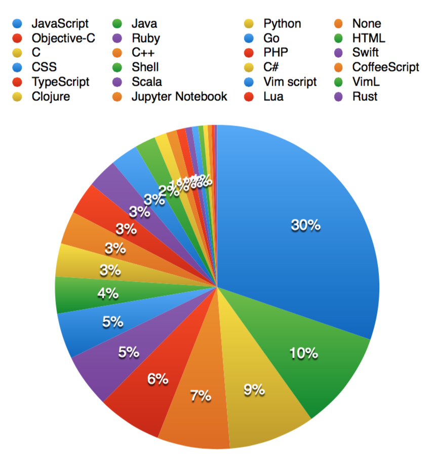

"Any application that can be written in JavaScript, will eventually be written in JavaScript." -- Jeff Atwood
“任何可以用 JavaScript 来写的应用，最终都会用 JavaScript 来实现。”
前端摩尔定律
“每隔18个月，前端开发的难度难度会增加一倍。”
工具链和生态环境巨变
2015 → 2017
主流框架：jQuery → React、Vue
构建打包：gulp → webpack
模块仓库：无 → npm
Nodejs：v0.11.15 → v8.2.1
语言规范：ES5 → ES8
Github 占比 (2016年)

npm 模块
npm 已经成为世界上最大的模块仓库，模块数量是 Maven 仓库的 2 倍
从2017年1月到2017年7月，模块数量从 35 万+增长到 47 万+
JavaScript 语言
/* 曾经的 class */
function Human(age) {
this.age = age;
}
Human.prototype.speak = function(sentence) {
console.log(sentence);
};
var wang = new Human(18);
wang.speak('I am ' + wang.age + ' years old');
// output: I am 18 years old
JavaScript 语言
/* 现在的 class */
class Human {
constructor(age) {
this.age = age;
}
speak(sentence) {
console.log(sentence);
}
}
let wang = new Human(18);
wang.speak(`I am ${wang.age} years old`);
// output: I am 18 years old
JavaScript 语言
Hello JavaScript
/* Dom 操作 */
$('#btn').on('click', function() {
$('#btn').addClass('clicked');
$('#dialog').show();
});
JavaScript 语言
/* Dom 操作 */
import React from 'react';
class Demo extends React.Component {
handleBtnClicked = () => {
this.setState({
isClicked: true
});
}
render() {
return